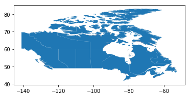
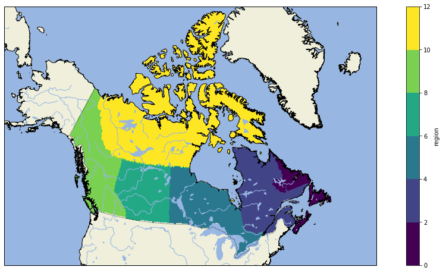
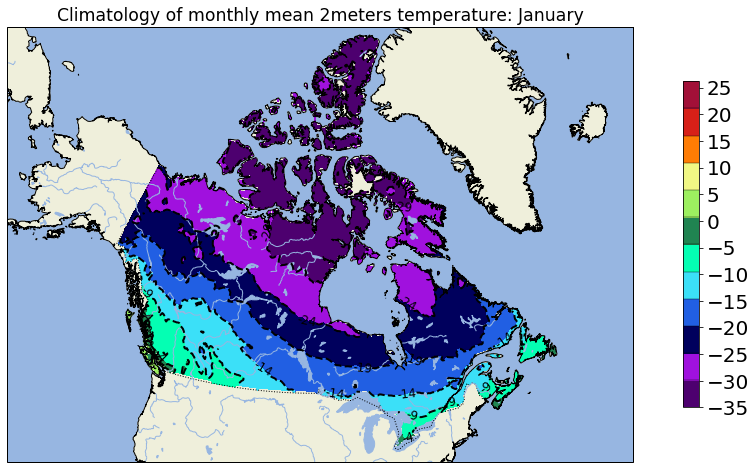
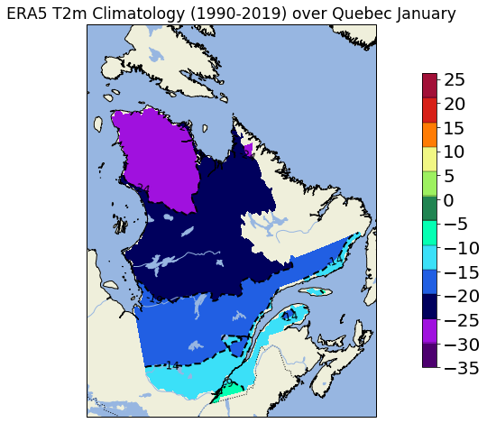
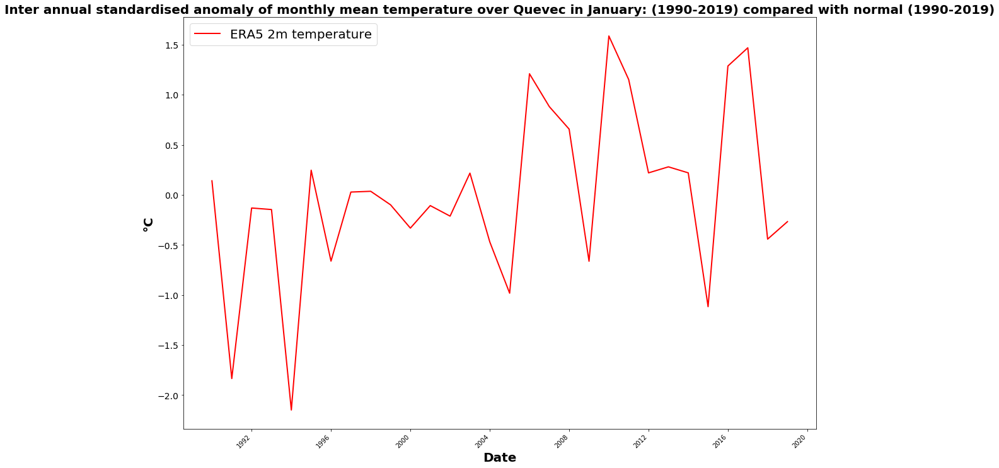

Working with ERA5 reanalysis

Exemples using ERA5 reanalysis
In this post, we will work with ERA5 reanalysis and show how to extract a region using shapefile and compute standard deviation.
We first import our librairies:
from netCDF4 import Dataset, num2date
import warnings
warnings.filterwarnings("ignore")
import datetime
import xarray as xr
import pandas as pd
import cartopy.crs as ccrs
import cartopy.feature as cfeature
import xarray as xr
import numpy as np
import regionmask
import geopandas as gpd
import pandas as pd
import matplotlib.pyplot as plt
import warnings; warnings.filterwarnings(action='ignore')
%matplotlib inline
Working over canadian provinces
Canadian province shapefiles are available on this website:
After downloaded the shapefiles, we must load it using geopandas library:
PATH_TO_SHAPEFILE = './Canadian_province/lpr_000b16a_e/lpr_000b16a_e.shp'
province = gpd.read_file(PATH_TO_SHAPEFILE)
province.iloc[:,:-1]
| PRUID | PRNAME | PRENAME | PRFNAME | PREABBR | PRFABBR | |
|---|---|---|---|---|---|---|
| 0 | 10 | Newfoundland and Labrador / Terre-Neuve-et-Labrador | Newfoundland and Labrador | Terre-Neuve-et-Labrador | N.L. | T.-N.-L. |
| 1 | 11 | Prince Edward Island / Île-du-Prince-Édouard | Prince Edward Island | Île-du-Prince-Édouard | P.E.I. | Î.-P.-É. |
| 2 | 12 | Nova Scotia / Nouvelle-Écosse | Nova Scotia | Nouvelle-Écosse | N.S. | N.-É. |
| 3 | 13 | New Brunswick / Nouveau-Brunswick | New Brunswick | Nouveau-Brunswick | N.B. | N.-B. |
| 4 | 24 | Quebec / Québec | Quebec | Québec | Que. | Qc |
| 5 | 35 | Ontario | Ontario | Ontario | Ont. | Ont. |
| 6 | 46 | Manitoba | Manitoba | Manitoba | Man. | Man. |
| 7 | 47 | Saskatchewan | Saskatchewan | Saskatchewan | Sask. | Sask. |
| 8 | 48 | Alberta | Alberta | Alberta | Alta. | Alb. |
| 9 | 59 | British Columbia / Colombie-Britannique | British Columbia | Colombie-Britannique | B.C. | C.-B. |
| 10 | 60 | Yukon | Yukon | Yukon | Y.T. | Yn |
| 11 | 61 | Northwest Territories / Territoires du Nord-Ouest | Northwest Territories | Territoires du Nord-Ouest | N.W.T. | T.N.-O. |
| 12 | 62 | Nunavut | Nunavut | Nunavut | Nvt. | Nt |
tmpWGS84 = province.to_crs({'proj':'longlat', 'ellps':'WGS84', 'datum':'WGS84'})
tmpWGS84.plot()
<matplotlib.axes._subplots.AxesSubplot at 0x436e8908>

Shapes are here a GeoDataFrame containing all polygons illustrating the canadian province boundaries.
Now we can load the ERA5 gridded data. The parameter chunks is very important, it defines how big are the “pieces” of data moved from the disk to the memory. With this value the entire computation on a workstation with 32 GB takes a couple of minutes.
We will load all the temperature files for the year 2018 using Xarray library.
model='ERA5_T2m_1h'
t_in = 'J:/REANALYSES/ERA5/T2m_1h/'
data = t_in + model + '_2018*_sfc.nc'
ds = xr.open_mfdataset(data, chunks = {'time': 10})
The next function assign_coords will convert the longitude from the 0-360 range to -180,180
ds = ds.assign_coords(longitude=(((ds.longitude + 180) % 360) - 180)).sortby('longitude')
Our xarray Dataset contains a single variable (t2m) which is stored as a dask.array. This is the result of loading files with open_mfdataset.
Now we will use regionmask module to create a gridded mask with the function regions_cls documented here.
With this function we will create an object able to mask ERA5 gridded data.
province_mask_poly = regionmask.Regions_cls(name = 'PRENAME', numbers = list(range(0,13)), names = list(tmpWGS84.PRENAME), abbrevs = list(tmpWGS84.PRENAME), outlines = list(tmpWGS84.geometry.values[i] for i in range(0,13)))
province_mask_poly
13 'PRENAME' Regions ()
Newfoundland and Labrador Prince Edward Island Nova Scotia New Brunswick Quebec Ontario Manitoba Saskatchewan Alberta British Columbia Yukon Northwest Territories Nunavut
Now we are ready to apply the mask on the gridded dataset xarray ERA5.
We select only the first timestep to speed up the process.
mask = province_mask_poly.mask(ds.isel(time = 0), lat_name='latitude', lon_name='longitude')
mask.to_netcdf('ERA5_mask_Canadian_provinces.nc')
masque = xr.open_mfdataset('ERA5_mask_Canadian_provinces.nc')
lat_bnd = [84, 40]
lon_bnd = [-148, -50]
masque = masque.sel(longitude=slice(*lon_bnd), latitude=slice(*lat_bnd),)
Here’s a function to make maps in the future.
def make_figure():
fig=plt.figure(figsize=(18,8), frameon=True)
ax = plt.axes(projection=ccrs.LambertConformal())
ax.add_feature(cfeature.OCEAN.with_scale('50m')) # couche ocean
ax.add_feature(cfeature.LAND.with_scale('50m')) # couche land
ax.add_feature(cfeature.LAKES.with_scale('50m')) # couche lac
ax.add_feature(cfeature.BORDERS.with_scale('50m'), linestyle='dotted') # couche frontieres
ax.add_feature(cfeature.RIVERS.with_scale('50m')) # couche rivières
coast = cfeature.NaturalEarthFeature(category='physical', scale='10m', # ajout de la couche cotière
facecolor='none', name='coastline')
ax.add_feature(coast, edgecolor='black')
return fig, ax
We can make a quick visualisation of our netcdf mask:
_, ax = make_figure()
ax.set_extent([-140,-50,32,82])
masque.region.plot.contourf(ax = ax, transform=ccrs.PlateCarree())
<matplotlib.contour.QuadContourSet at 0x16563e48>

Compute daily and monthly 2 meters temperature mean
We will now compute daily and monthly 2 meters temperature mean using hourly ERA5 datasets. To speed up our calcul, we will cut a subset over Canada only.
Here’s an example code just for one month and one year:
model='ERA5_T2m_1h'
yi = 1990
yf = 1990
#########################################################
t_in = 'J:/REANALYSES/ERA5/T2m_1h/'
daily_out = 'J:/REANALYSES/ERA5/T2m_daily/'
monthly_out = 'J:/REANALYSES/ERA5/T2m_monthly/'
for year in range(yi,yf+1): # loop over years
for i in range (1,2,1): # loop over months
data = t_in + model + '_'+str(year) +'{:02d}'.format(i)+'_sfc.nc'
ds = xr.open_mfdataset(data)
ds = ds - 273.15 # convert from Kelvin to Celcius
ds = ds.assign_coords(longitude=(((ds.longitude + 180) % 360) - 180)).sortby('longitude')
lat_bnd = [84, 40]
lon_bnd = [-148, -50]
ds = ds.sel(longitude=slice(*lon_bnd), latitude=slice(*lat_bnd),)
daily_mean = ds.groupby('time.day').mean('time')
daily_mean.to_netcdf(daily_out + 'Daily_Mean_T2m_CAN_'+str(year) +'{:02d}'.format(i)+'.nc')
monthly_mean = daily_mean.mean('day')
monthly_mean.to_netcdf(monthly_out + 'Monthly_Mean_T2m_CAN_'+str(year) +'{:02d}'.format(i)+'.nc')
Monthly climatologies and standardized anomalies
Once we have monthly mean values, we can now compute climatology and standard anomaly for monthly temperature from 1979 to 2019. Our reference climatology to compute standardized anomalies is 1990-2019 period.
We will first work with one month (ie january), we will make a loop over all months after.
First we open and load datasets:
import xarray as xr
#### First we open and load datasets
#for month in range (1,2,1):
m = 1
file = 'J:/REANALYSES/ERA5/T2m_monthly/Monthly_Mean_T2m_CAN_'
month = '{:02d}'.format(m)
multi_file = [f'{file}{year}{month}.nc' for year in range(1990,2020,1)]
ds_all = xr.concat([xr.open_dataset(f) for f in multi_file], 'time')
ds_all.time
<xarray.DataArray 'time' (time: 30)>
array([ 0, 1, 2, 3, 4, 5, 6, 7, 8, 9, 10, 11, 12, 13, 14, 15, 16, 17,
18, 19, 20, 21, 22, 23, 24, 25, 26, 27, 28, 29], dtype=int64)
Dimensions without coordinates: time
Our time is without dimension, it’s just an integer. To easly handle our fields, we can define a DatetimeIndex to change ‘time’ dimension in our Xarray. For more information.
ds_all['time'] = pd.date_range('1990-'+month+'-01', freq='YS', periods=ds_all.time.shape[0])
ds_all.time.head()
<xarray.DataArray 'time' (time: 5)>
array(['1990-01-01T00:00:00.000000000', '1991-01-01T00:00:00.000000000',
'1992-01-01T00:00:00.000000000', '1993-01-01T00:00:00.000000000',
'1994-01-01T00:00:00.000000000'], dtype='datetime64[ns]')
Coordinates:
* time (time) datetime64[ns] 1990-01-01 1991-01-01 ... 1994-01-01
We can compute our climatology and standard deviation over 30 years: 1990-2019
clim_yi = 1990
clim_yf = 2019
ds_clim = ds_all.sel(time=slice(str(clim_yi)+'-'+month+'-01', str(clim_yf)+'-'+month+'-01'))
data_clim = ds_clim.variables['t2m'][:].mean("time")
data_std = ds_clim.variables['t2m'][:].std("time")
We can apply a function with .apply_unfunc and groupby methods to compute a standardized anomaly:
stand_anomalies = xr.apply_ufunc(
lambda x, m, s: (x - m) / s,
ds_all.groupby("time"),
data_clim,
data_std,
)
stand_anomalies.to_netcdf('J:/REANALYSES/ERA5/T2m_Month_Anomaly/Std_Anomaly_Monthly_Mean_T2m_CAN_'+
str(yi)+'-'+str(yf)+'_vs_'+str(clim_yi)+'-'+str(clim_yf)+'_'+str(month)+'.nc')
We will mask all Canadian provinces with applying our mask region created at the begining of this post:
data_clim_can = data_clim.where(masque.region >= 0)
We can now display january monthly mean temperature climatology:
_, ax = make_figure()
ax.set_extent([-140,-50,32,82])
import matplotlib as mpl
import datetime
monthstr = datetime.date(1900, int(month), 1).strftime('%B')
data_levels = np.arange(-35, 30, 5.1)
Y=np.array([[77,0,111],[115,14,181],[160,17,222],[195,14,240],\
[0,0,93],[21,38,177],[33,95,227],[32,162,247],[59,224,248],[202,255,250],\
[4,255,179],[37,181,139],[32,132,81],[72,162,60],[157,240,96],[213,255,166],\
[241,247,132],[248,185,68],[255,124,4],[235,78,14],[215,32,24],[189,24,40],[162,16,56],[135,16,65],[107,15,73]])/255.
colbar=mpl.colors.ListedColormap(Y)
mm = ax.contourf(data_clim_can.longitude,\
data_clim_can.latitude,\
data_clim_can,\
vmin=-35,\
vmax= 30, \
transform=ccrs.PlateCarree(),\
levels=data_levels,\
cmap=colbar )
data_contour = ax.contour(data_clim_can.longitude, data_clim_can.latitude, data_clim_can,
levels = data_levels,
linewidths=2,
colors='k',
transform = ccrs.PlateCarree())
#Plot contour labels for the heights, leaving a break in the contours for the text (inline=True)
plt.clabel(data_contour, data_levels, inline=True, fmt='%1i', fontsize=12)
# Define gridline locations and draw the lines using cartopy's built-in gridliner:
xticks = np.arange(-150.0,-40.0,20)
yticks =np.arange(10,80,10)
cbar = plt.colorbar(mm, shrink=0.75, drawedges='True', ticks=np.arange(-35, 30.1, 5.), extend='both') # 2018
cbar.ax.tick_params(labelsize=20)
string_title=u'Climatology of monthly mean 2meters temperature: ' + monthstr
plt.title(string_title, size='xx-large')
Text(0.5, 1.0, 'Climatology of monthly mean 2meters temperature: January')

If we just want to display over one province, we can adjust our mask. Let’s plot climatology over Quebec:
data_clim_qc = data_clim.where(masque.region == 4 )
_, ax = make_figure()
ax.set_extent([-80,-60,45,65])
monthstr = datetime.date(1900, int(month), 1).strftime('%B')
data_levels = np.arange(-35, 30, 5.1)
Y=np.array([[77,0,111],[115,14,181],[160,17,222],[195,14,240],\
[0,0,93],[21,38,177],[33,95,227],[32,162,247],[59,224,248],[202,255,250],\
[4,255,179],[37,181,139],[32,132,81],[72,162,60],[157,240,96],[213,255,166],\
[241,247,132],[248,185,68],[255,124,4],[235,78,14],[215,32,24],[189,24,40],[162,16,56],[135,16,65],[107,15,73]])/255.
colbar=mpl.colors.ListedColormap(Y)
data_levels = np.arange(-35, 30, 5.1)
mm = ax.contourf(data_clim_qc.longitude,\
data_clim_qc.latitude,\
data_clim_qc,\
vmin=-35,\
vmax= 30, \
transform=ccrs.PlateCarree(),\
levels=data_levels,\
cmap=colbar )
data_contour = ax.contour(data_clim_qc.longitude, data_clim_qc.latitude, data_clim_qc,
levels = data_levels,
linewidths=2,
colors='k',
transform = ccrs.PlateCarree())
#Plot contour labels for the heights, leaving a break in the contours for the text (inline=True)
plt.clabel(data_contour, data_levels, inline=True, fmt='%1i', fontsize=12)
# Define gridline locations and draw the lines using cartopy's built-in gridliner:
xticks = np.arange(-150.0,-40.0,20)
yticks =np.arange(10,80,10)
cbar = plt.colorbar(mm, shrink=0.75, drawedges='True', ticks=np.arange(-35, 30.1, 5.), extend='both') # 2018
cbar.ax.tick_params(labelsize=20)
string_title=u'ERA5 T2m Climatology (1990-2019) over Quebec ' + monthstr
plt.title(string_title, size='xx-large')
Text(0.5, 1.0, 'ERA5 T2m Climatology (1990-2019) over Quebec January')

Inter-annual standardised anomaly
Let’s compute and draw inter-annual standardised anomaly over Quebec:
stand_anomalies_qc = stand_anomalies.where(masque.region == 4)
stand_anomalie_serie = stand_anomalies_qc.mean(['latitude','longitude'])
stand_anomalie_serie.time.values[-1]
numpy.datetime64('2019-01-01T00:00:00.000000000')
color = ['black','blue', 'red']
fig = plt.figure(figsize=(18, 12))
plt.rcParams["figure.figsize"]=[16,9] #
plt.plot(stand_anomalie_serie.time.values, stand_anomalie_serie.t2m.values,
label='ERA5 2m temperature', linewidth=2, c=color[2])
plt.legend(loc="upper left", markerscale=1., scatterpoints=1, fontsize=20)
plt.yticks( fontsize=14)
ax.grid(axis = "x", linestyle = "--", color='black', linewidth=0.25, alpha=0.5)
ax.grid(axis = "y", linestyle = "--", color='black', linewidth=0.25, alpha=0.5)
plt.setp(plt.gca().get_xticklabels(), rotation=45, ha="right")
plt.xlabel('Date', fontsize=20, color='black', weight='semibold')
plt.ylabel('°C', fontsize=20, color='black', weight='semibold')
plt.title('Inter annual standardised anomaly of monthly mean temperature over Quevec in January: (1990-2019) compared with normal (1990-2019)', fontsize=20, color='black', weight='semibold')
ax.set_facecolor('white')
plt.yticks( fontsize=14)
plt.show()

Guillaume Dueymes
Data Scientist and Research Assistant
My research interests include data science, data management and climate science.